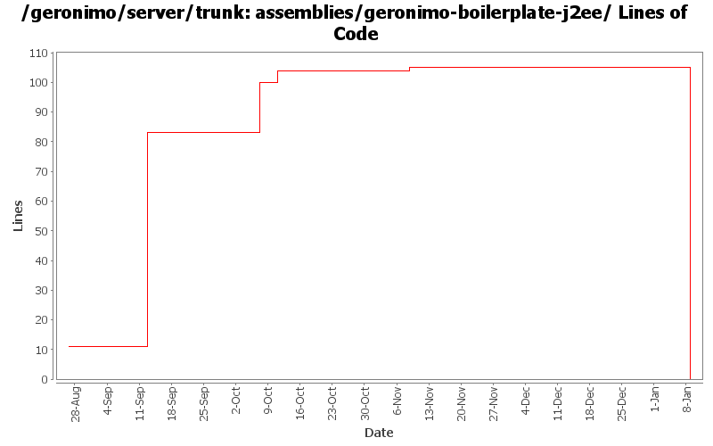

[root]/assemblies/geronimo-boilerplate-j2ee
 src
(0 files, 0 lines)
src
(0 files, 0 lines)
 main
(0 files, 0 lines)
main
(0 files, 0 lines)
 resources
(0 files, 0 lines)
resources
(0 files, 0 lines)
 var
(0 files, 0 lines)
var
(0 files, 0 lines)
 config
(0 files, 0 lines)
config
(0 files, 0 lines)

| Author | Changes | Lines of Code | Lines per Change |
|---|---|---|---|
| Totals | 16 (100.0%) | 133 (100.0%) | 8.3 |
| jdillon | 7 (43.8%) | 86 (64.7%) | 12.2 |
| djencks | 2 (12.5%) | 33 (24.8%) | 16.5 |
| rickmcguire | 2 (12.5%) | 7 (5.3%) | 3.5 |
| hogstrom | 2 (12.5%) | 6 (4.5%) | 3.0 |
| dain | 1 (6.3%) | 1 (0.8%) | 1.0 |
| kevan | 2 (12.5%) | 0 (0.0%) | 0.0 |
Eliminate geronimo-boilerplate-j2ee (merged into geronimo-boilerplate-jee5)
0 lines of code changed in 2 files:
GERONIMO-2537 Fix notices and src headers in recent jee5 updates. Update Web Console notice.txt w/ ibm donation information, add copyright to assembly notice files, and remove ASF v 1.1 license from source borrowed from xerces project
0 lines of code changed in 2 files:
Changed version to 2.0-SNAPSHOT
1 lines of code changed in 1 file:
OPENEJB-310 Need to update yoko dependencies for new rmi jar packaging.
1 lines of code changed in 1 file:
GERONIMO-2460 Copy jpa support into trunk. jetty-j2ee server only so far. Daytrader w/preenhanced classes works, runtime enhancement not yet tested
1 lines of code changed in 1 file:
Using ${version} instead of ${pom.version} in a feeble attempt to get around ${pom.version} changing to its timestamp version for SNAPSHOT artifacts
2 lines of code changed in 1 file:
Updated the project to refer to the TranQL RA rather than the base connector framework
1 lines of code changed in 1 file:
Updated configurations to support TranQL move to M2
5 lines of code changed in 1 file:
GERONIMO-2483 Yoko support also requires the yoko-rmi jar on the endorsed jars class path.
6 lines of code changed in 1 file:
Use resource-bundle packaging for boilerplates
1 lines of code changed in 1 file:
GERONIMO-2180. Actually get the yoko spec jar in endorsed, and put the yoko classes in the same classloader as openejb-core in the client so they can be accessed
32 lines of code changed in 1 file:
Moved rar install to j2ee boilerplate
83 lines of code changed in 1 file:
(GERONIMO-2331) Updated configs to pull resources from the standard location, clean up some remaining config used to use std locations
0 lines of code changed in 2 files: